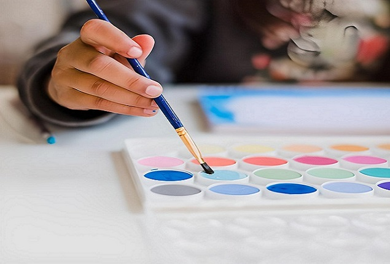

Nosotros
reseña historica
La I.E. Cristiana de ciencias Ebenezer fue creada con la finalidad de dar una educación de alta calidad con enseñanza intensiva de los valores cristianos el cual llevaría un nombre que armonizara con el perfil ideal de personalidades; que demuestren gratitud a El. La I.E. toma el nombre de “EBENEZER” en gratitud y testimonio de lo que Dios ha hecho con esta obra de servicio educativo.Según la historia en el antiguo testamento, cuando el pueblo de Israel se encontró rodeado de enemigos poderosos, el pueblo rogó al juez Samuel que orará fervientemente a Dios pidiendo su protección porque ya estaba rodeado. Samuel clamó al Dios todopoderoso y Dios escucho el clamor y salvo milagrosamente a su pueblo. Entonces, Samuel levanto una piedra y en gratitud a Dios la llamo EBENEZER, que significa: “Hasta aquí nos ayudo Dios” I Samuel 7:12. Nuestro país requiere de ciudadanos con personalidades sólidas formadas en valores, que sean capaces de tomar decisiones y actuar en bien de la familia, sus semejantes y la sociedad. Hoy que vemos hecho realidad el colegio, damos gracias a Dios porque a pesar de muchos obstáculos él ha sido nuestro protector, El es el gran VENCEDOR. Es nuestro deseo que ÉL levante “Piedras Vivas” quienes demuestren personalidades auténticas, con bases sólidas, convicciones y valores duraderos para toda la vida. I Pedro 2:5
